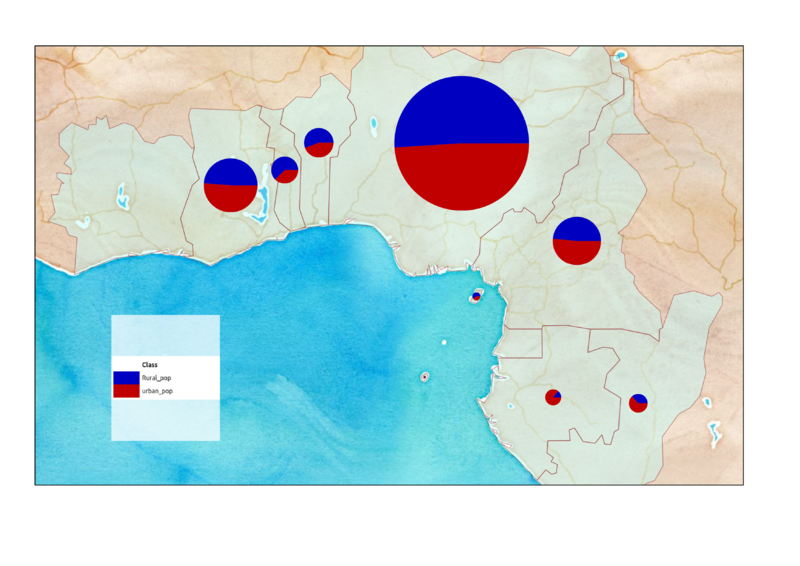

Welcome to Diagram Legend’s documentation!
This is a minimal help, just to get you started.
The plugin is quite simple to use. First make sure that:
- The layer you want to produce the legend to, is active;
- This layer has valid pie charts/histograms, produced using the "Overlay" tab;
Next, you can call the plugin by going to the "Plugins" menu, or by pressing the shortcut key ("F7").
You can generate the legend, by pressing the "Generate" button, and export it into one of the supported formats, using the "Export" button. After exporting into an image, you can add your legend to a map using the "map composer".

You can read more about the plugin, on the
project's page.